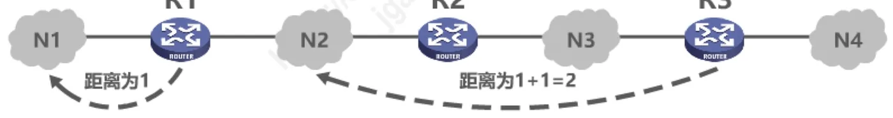
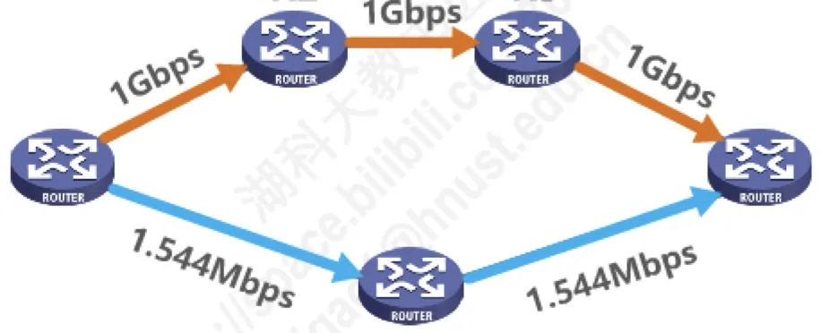
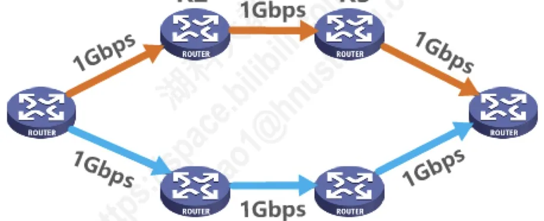
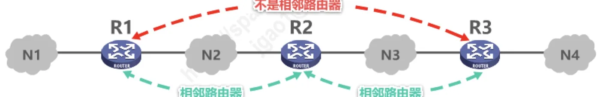
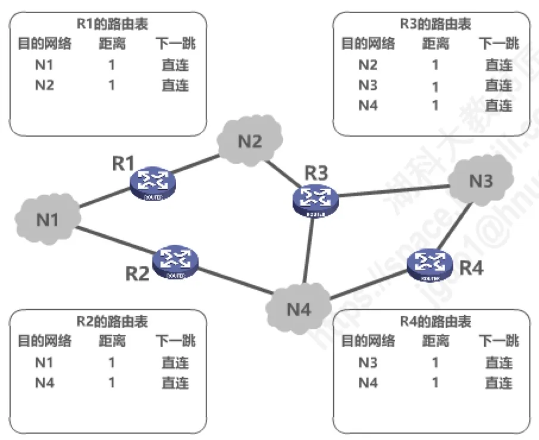
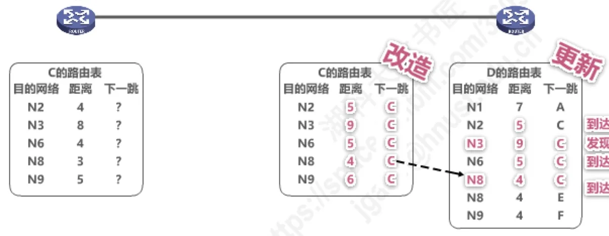
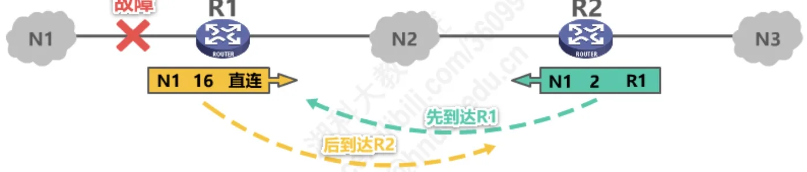
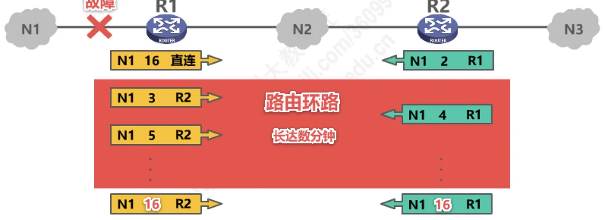
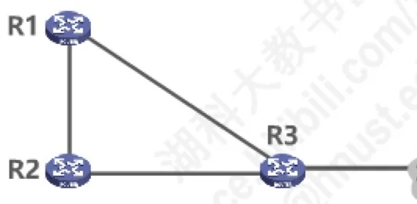

计算机通信与网络 · 第 4 章 网络层
4.6.2 路由信息协议RIP的基本工作原理
上一节把路由选择协议分成了内部网关协议与外部网关协议两大类，从这一节起逐个看它们的代表。第一个是内部网关协议中最先得到广泛使用的 RIP：它拿「跳数」当距离，只和邻居交换自己的整张路由表，工作方式简单到三句话就能讲完。也正因为简单，它留下了距离向量算法特有的「坏消息传播得慢」这个老毛病——这既是 RIP 的局限，也是理解后面 OSPF、BGP 为什么那样设计的起点。
1. RIP 的定位与「距离向量」
路由信息协议 RIP（Routing Information Protocol）是内部网关协议 IGP（Interior Gateway Protocol）中最先得到广泛使用的协议之一，其相关标准文档为 RFC 1058。它属于距离向量类协议。
RIP 要求自治系统 AS 内的每一个路由器都要维护「从它自己到 AS 内其他每一个网络」的距离记录。注意这里保存的不是某一条路由，而是一组距离，所以称为距离向量 D-V（Distance-Vector）。
RIP 使用跳数（Hop Count）作为度量（Metric）来衡量到达目的网络的距离，具体规定有三条：
- 路由器到直连网络的距离定义为 1；
- 路由器到非直连网络的距离定义为所经过的路由器数加 1；
- 允许一条路径最多只能包含 15 个路由器，「距离」等于 16 时就相当于不可达。
图 1 用一个最简的例子说明这两条距离定义：R1 到它直连的 N1、N2 距离都是 1，而 R2、R3 到 N1 的距离要在经过的路由器数上再加 1。

由于距离被限制在 16 以内（相当于把「无穷大」取作 16），一条路径不可能经过太多路由器，所以 RIP 只适用于小型互联网。这个上限还有一个用处：当网络中出现路由环路、距离被一步步数大时，最多数到 16 就会停下来，不会无限数下去，本节第 6 部分会再回来看它。
关于「距离 16」，有一道真题专门考过它的含义：
【2010 年 题 35】某自治系统内采用 RIP 协议，若该自治系统内的路由器 R1 收到其邻居路由器 R2 的距离矢量，距离矢量中包含信息 <net1, 16>，则能得出的结论是（ ）。
A. R2 可以经过 R1 到达 net1，跳数为 17 B. R2 可以到达 net1，跳数为 16
C. R1 可以经过 R2 到达 net1，跳数为 17 D. R1 不能经过 R2 到达 net1
答案：D。解析：在 RIP 协议中，距离 16 被定义为目的网络不可达。因此 R2 到 net1 的距离是 16，说明 R2 无法到达 net1；既然 R2 自己都到不了 net1，R1 自然也不能经过 R2 到达 net1。
2. RIP 眼中的「好路由」与等价负载均衡
RIP 认为好路由就是「距离短」的路由，也就是所通过路由器数量最少的路由。请注意这句话的反面：链路速率、时延、负载这些因素，RIP 一概不看，它只数跳数。
图 2 的例子很能说明问题。R1 要到 R5，经过 R2、R3 的那条路径虽然链路速率高达 1 Gbps，但要走 4 个路由器；经过 R4 的那条路径中间是 1.544 Mbps 的低速链路，却只要走 2 个路由器。RIP 选的是后者——R1 → R4 → R5。

如果到达同一目的网络有多条「距离相等」的路由，RIP 不会随便挑一条，而是可以进行等价负载均衡，把流量分摊到这几条等距离的路径上。图 3 中 R1 到 R6 的两条路径经过的路由器数相同，就属于这种情况。

3. RIP 的三个要点
RIP 的工作方式可以浓缩成三个问题：和谁交换信息、交换什么信息、何时交换信息。答案是——
- 和谁交换信息：仅和相邻路由器交换信息，不相邻的路由器之间不直接交换；
- 交换什么信息：交换的是自己的路由表，也就是自己掌握的全部路由信息；
- 何时交换信息：周期性交换，例如每 30 秒一次。
图 4 把这三点画在了一起：R1 只和相邻的 R2 交换，而与它不相邻的 R3 之间不直接交换信息。

4. RIP 的基本工作过程
把上面三点串起来，RIP 的基本工作过程只有三句话：
- ① 路由器刚开始工作时，只知道自己到直连网络的距离为 1；
- ② 每个路由器仅和相邻路由器周期性地交换并更新路由信息；
- ③ 若干次交换和更新后，每个路由器都知道了到达本 AS 内各网络的最短距离和下一跳地址，这个过程称为收敛。
图 5 是第①步之后的情形：四台路由器各自只填得出与自己直连的那几个网络，N3、N4 对 R1 来说暂时还不知道怎么走。

「收敛」这个词后面还会反复出现：它指网络中所有路由器的路由表都达到了稳定、一致的最优状态，此时谁到哪个网络走哪一跳、距离多少，大家都心里有数。网络拓扑一旦发生变化（链路故障、新网络接入），已经收敛的状态就被打破，路由器要重新交换、重新收敛。
5. RIP 路由条目的更新规则
路由器之间交换的报文叫 RIP 更新报文，里面封装着发送方路由表中的路由信息。以相邻的两个路由器 C 和 D 为例：C 在把自己的路由表发给 D 之前要先「改造」一遍——把表中每一项的距离加 1（因为从 D 的角度看，经 C 到达那些网络要多走一步），并把下一跳都改为 C。D 收到这份改造过的路由表后，逐项与自己的路由表比较，按下述五条规则处理：
- 发现了新的网络（自己的路由表里没有这个目的网络）：直接添加；
- 到达目的网络，相同下一跳，最新消息：更新——消息就来自原来的下一跳，它对这条路由最有发言权，哪怕距离变大也要照改；
- 到达目的网络，不同下一跳，新路由优势（距离更小）：更新；
- 到达目的网络，不同下一跳，距离相等：两条路由都保留，进行等价负载均衡；
- 到达目的网络，不同下一跳，新路由劣势（距离更大）：不更新。
这五条规则恰好覆盖了收到一条路由信息后所有可能的情形：全新的网络、同源传来的新消息、更优的路由、等价的路由、更差的路由。图 6 是讲义给出的完整示例：左边是 C 的路由表被改造前后的样子，右边是 D 收到报文后逐项更新的结果，「相同下一跳更新」「发现新网络添加」「不同下一跳更优更新」「等价负载均衡」「不同下一跳更差、不更新」五种情形各出现了一次。

其中第二条规则值得多说一句：为什么「相同下一跳」时不管距离变大变小都要更新？因为这条路由的源头就是对方，它说网络不可达了，那就一定是不可达了，照它的说法改是最稳妥的——坏消息也正是靠这一条才得以传出去。原讲义在这里安排了一道练习（A 向 B 发送 RIP 更新报文，请给出 B 更新后的路由表），做的办法就是把这五条规则逐项对号入座：先看是不是新网络，再看下一跳是否相同，最后比较距离的大小。
6. 「坏消息传播得慢」问题
RIP 最著名的缺陷叫坏消息传播得慢，又称为路由环路或距离无穷计数问题，这是距离向量算法的一个固有问题。
先说它是怎么发生的。R1 直连的网络 N1 发生了故障（图 7），R1 发现后应当把自己到 N1 的距离改成 16，表示不可达。但坏消息不是一下子就能传遍全网的：如果 R1 还没来得及把 16 告诉 R2，R2 反而先把自己路由表里「到 N1 距离 2、下一跳 R1」的旧信息发给了 R1，R1 一听就会误以为可以绕过 R2 到达 N1，于是把到 N1 的距离改成 3、下一跳改为 R2；接着 R2 又从 R1 那里学到距离 4……双方就这样你来我往，距离一步一步往上涨，一直数到 16 才发现 N1 真的不可达（图 8）。在这长达数分钟的时间里，R1 和 R2 之间形成了一条互相指向对方的路由环路，所有去往 N1 的数据包都在环路上来回打转。


既然是算法的固有毛病，就只能在「减少它出现的概率」和「减小它带来的危害」上做文章。RIP 中常见的措施有三条：
- 限制最大路径距离为 15，距离 16 表示不可达——等于给无穷计数提前封顶，环路最多数到 16 就停；
- 触发更新：路由表一发生变化就立即发送更新报文，而不是干等到下一个周期；
- 水平分割：让路由器记录收到某条特定路由信息的接口，不让同一条路由信息再从这个接口向反方向传送。
下面这道真题考的正是坏消息传播过程中的一次更新判断，题目里的现象就是上面那几分钟里的一个瞬间：
【2016 年 题 37】假设 R1、R2、R3 采用 RIP 协议交换路由信息，且均已收敛。若 R3 检测到网络 201.1.2.0/25 不可达，并向 R2 通告一次新的距离向量，则 R2 更新后，其到达该网络的距离是（ ）。
A. 2 B. 3 C. 16 D. 17

答案：B。解析：由「R3 检测到网络 201.1.2.0/25 不可达」可知 R3 与该网络是直连的；又由「R1、R2、R3 采用 RIP 协议交换路由信息且均已收敛」可知，收敛时 R1 到该网络的距离为 2（下一跳 R3），R2 到该网络的距离为 3。R3 通告的新距离向量中，该网络的距离是 16，R2 若改走 R3，算出来的距离是 16 + 1 = 17，比原来的 3 大得多，属于「不同下一跳、新路由劣势」，按规则不更新，所以 R2 更新后到达该网络的距离仍然是 3。
这道题真正想考的就是「坏消息传播得慢」：R2 之所以坚持用距离 3 的那条旧路由，是因为它还不知道这条经由 R1、R3 的路径其实已经失效了。
本节小结
- RIP 是内部网关协议 IGP 中最先得到广泛使用的协议之一，标准文档为 RFC 1058；它属于距离向量协议，每个路由器维护自己到 AS 内其他每一个网络的一组距离，即距离向量 D-V。
- 度量是跳数：到直连网络的距离为 1，到非直连网络为所经过路由器数加 1；一条路径最多 15 个路由器，距离 16 表示不可达，因此 RIP 只适用于小型互联网。
- RIP 认为距离短（经过路由器最少）的路由就是好路由，与链路速率无关；到达同一目的网络有多条距离相等的路由时，可以做等价负载均衡。
- 三个要点：仅和相邻路由器交换信息、交换自己的路由表、周期性交换（例如每 30 秒）；交换并更新若干次后，全网路由表达到稳定一致的最优状态，称为收敛。
- 路由条目的更新规则共五条：发现新网络则添加；相同下一跳的最新消息则更新；不同下一跳且更优则更新；距离相等则等价负载均衡；不同下一跳且更差则不更新。
- 「坏消息传播得慢」又称路由环路或距离无穷计数问题，是距离向量算法的固有问题；缓解手段有限制最大距离为 15、触发更新和水平分割三条。
- 下一节换一个思路：OSPF 不再数跳数，而是给每条链路带上代价，并直接向全网泛洪链路状态。